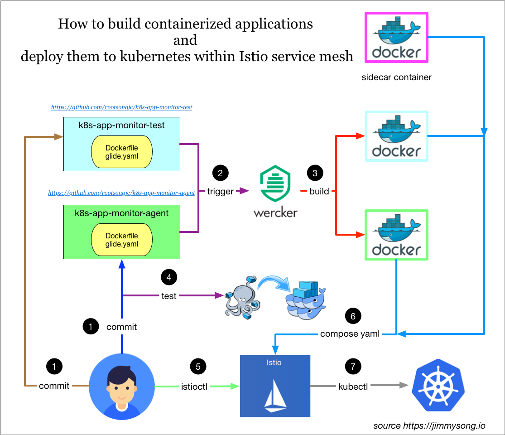
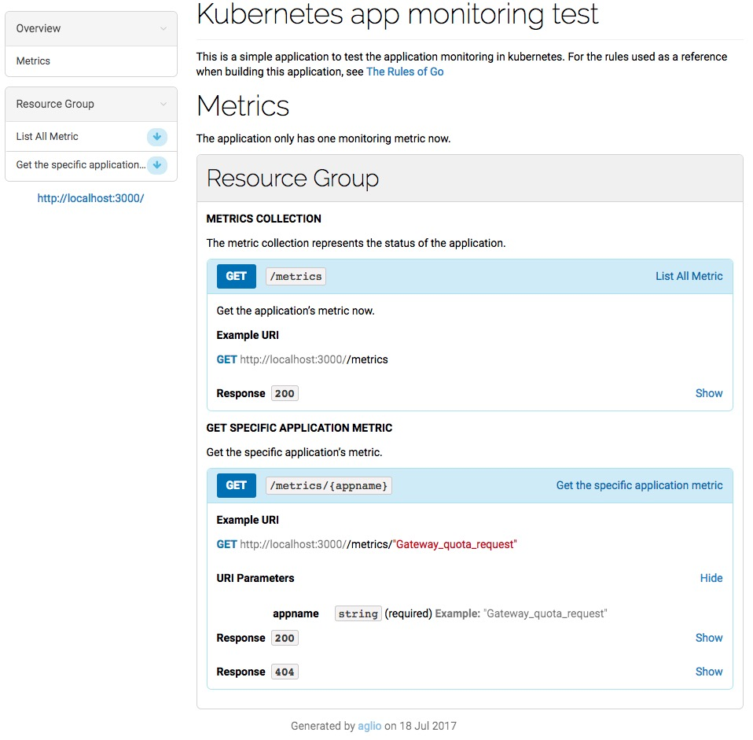
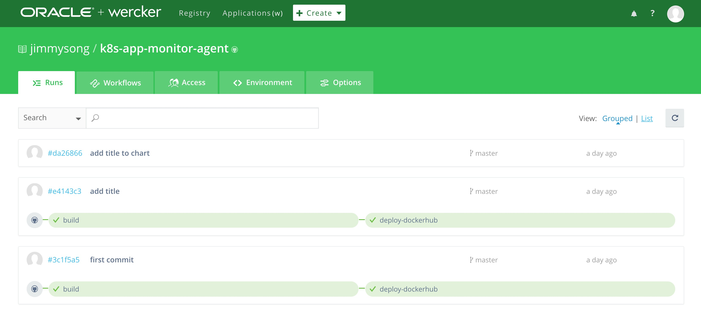
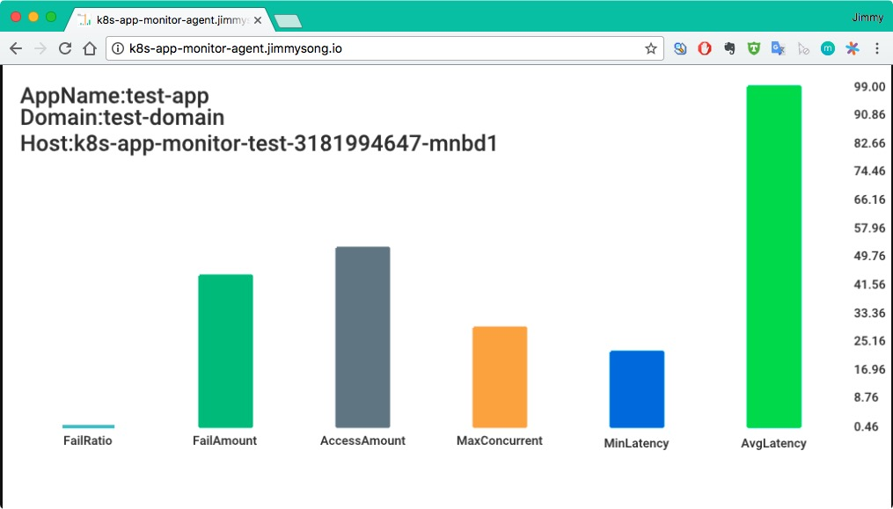
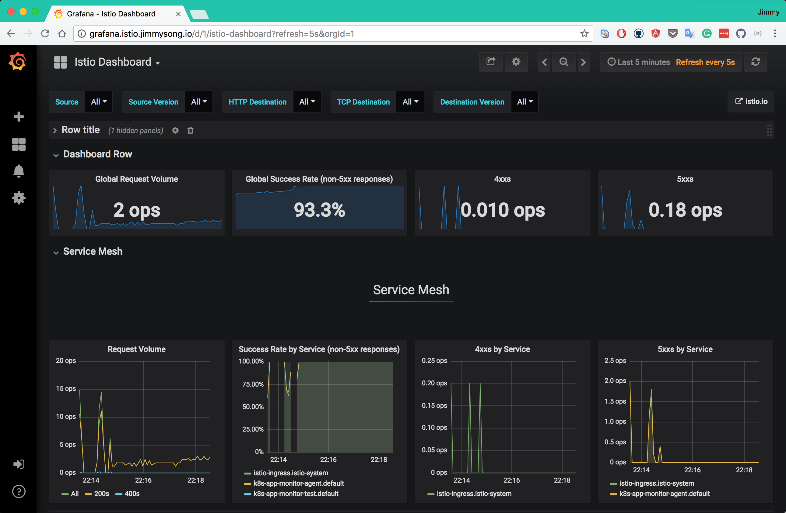
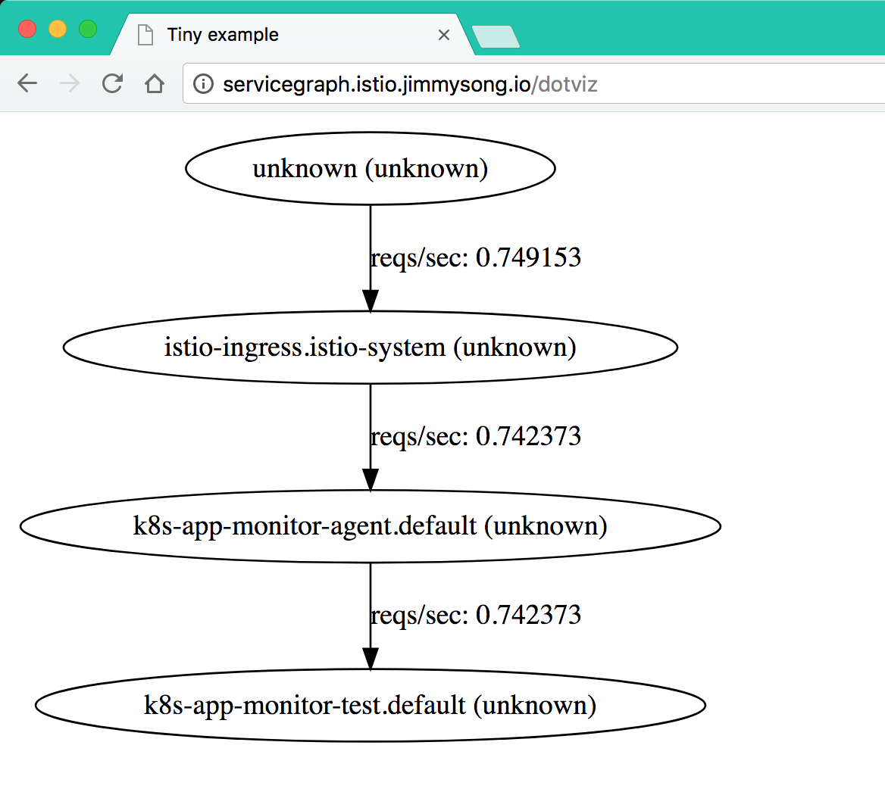
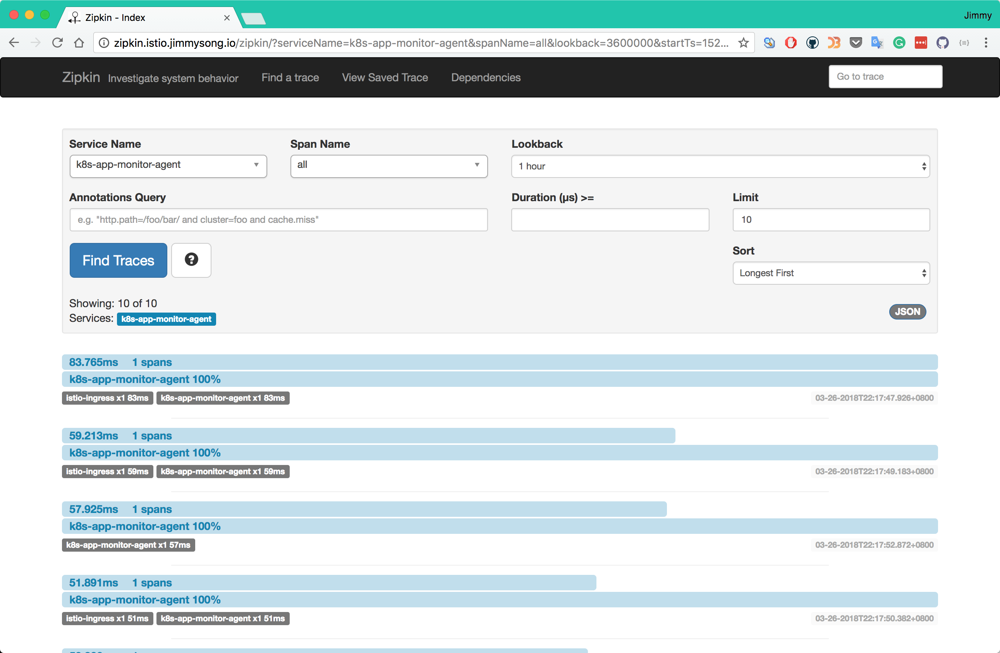

适用于kubernetes的应用开发部署流程
本文讲解了如何开发容器化应用：
- 使用Wercker持续集成工具构建docker镜像上传到docker镜像仓库中
- 在本地使用docker-compose测试后
- 使用kompose自动生成kubernetes的yaml文件
- 再将注入Envoy sidecar容器，集成Istio service mesh中
整个过程如下图所示：

为了讲解详细流程，写了用Go语言开发的示例程序放在GitHub中，模拟监控流程：
- k8s-app-monitor-test ：生成模拟的监控数据，在接收到http请求返回json格式的metrics信息
- k8s-app-monitor-agent：获取监控metrics信息并绘图，访问该服务将获得监控图表
API文档 见k8s-app-monitor-test 中的 api.html 文件，该文档在API blueprint中定义，使用aglio生成，打开后如图所示：

服务发现
K8s-app-monitor-agent服务需要访问k8s-app-monitor-test服务，这就涉及到服务发现的问题，在代码中直接写死了要访问的服务的内网DNS地址
kubedns中的地址，即k8s-app-monitor-test.default.svc.cluster.local
Kubernetes在启动Pod的时候为容器注入环境变量，这些环境变量在所有的 namespace 中共享
环境变量是不断追加的，新启动的Pod中将拥有老的Pod中所有的环境变量，而老的Pod中的环境变量不变
但是既然使用这些环境变量就已经可以访问到对应的service
那么获取应用的地址信息，究竟是使用变量呢？还是直接使用DNS解析来发现？
答案是 使用DNS
持续集成
这里使用wercker自动构建，构建完成后自动打包成docker镜像并上传到docker hub中
需要先在docker hub中创建repo
构建流程见：https://app.wercker.com/jimmysong/k8s-app-monitor-agent/

生成了如下两个docker镜像：
- jimmysong/k8s-app-monitor-test:9c935dd
- jimmysong/k8s-app-monitor-agent:234d51c
本地测试
在将服务发布到线上之前，可以先使用docker-compose在本地测试一下，这两个应用的docker-compose.yaml文件如下：
version: '2'
services:
k8s-app-monitor-agent:
image: jimmysong/k8s-app-monitor-agent:234d51c
container_name: monitor-agent
depends_on:
- k8s-app-monitor-test
ports:
- 8888:8888
environment:
- SERVICE_NAME=k8s-app-monitor-test
k8s-app-monitor-test:
image: jimmysong/k8s-app-monitor-test:9c935dd
container_name: monitor-test
ports:
- 3000:3000
执行下面的命令运行测试：
$ docker-compose up
在浏览器中访问 http://localhost:8888/k8s-app-monitor-test 就可以看到监控页面
发布
所有 kubernetes 应用启动所用的yaml配置文件都保存在那两个GitHub仓库的manifest.yaml文件中 也可以使用kompose这个工具，将docker-compose的YAML文件转换成kubernetes规格的YAML文件
- 在两个GitHub目录下执行 kubectl create -f manifest.yaml 即可启动服务
- 也可以直接在 k8s-app-monitor-agent 代码库的k8s目录下执行 kubectl apply -f kompose
在以上YAML文件中有包含了Ingress配置，是为了将k8s-app-monitor-agent服务暴露给集群外部访问
方式一
服务启动后需要更新ingress配置，在ingress.yaml文件中增加以下几行：
- host: k8s-app-monitor-agent.jimmysong.io
http:
paths:
- path: /k8s-app-monitor-agent
backend:
serviceName: k8s-app-monitor-agent
servicePort: 8888
保存后，然后执行 kubectl replace -f ingress.yaml 即可刷新ingress
修改本机的/etc/hosts文件，在其中加入以下一行：
172.20.0.119 k8s-app-monitor-agent.jimmysong.io
当然也可以将该域名加入到内网的DNS中，为了简单起见使用hosts
方式二
不修改已有的Ingress，而是为该队外暴露的服务单独创建一个Ingress，如下：
apiVersion: extensions/v1beta1
kind: Ingress
metadata:
name: k8s-app-monitor-agent-ingress
annotations:
kubernetes.io/ingress.class: "treafik"
spec:
rules:
- host: k8s-app-monitor-agent.jimmysong.io
http:
paths:
- path: /
backend:
serviceName: k8s-app-monitor-agent
servicePort: 8888
集成Istio
上一步中生成了kubernetes可读取的应用的YAML配置文件，可以将所有的YAML配置和并到同一个YAML文件中
假如文件名为 k8s-app-monitor-istio-all-in-one.yaml，如果要将其集成到Istio service mesh，只需要执行下面的命令：
kubectl apply -n default -f <(istioctl kube-inject -f k8s-app-monitor-istio-all-in-one.yaml)
这样就会在每个Pod中注入一个sidecar容器。
验证
如果使用的是Traefik ingress来暴露的服务，那么在浏览器中访问http://k8s-app-monitor-agent.jimmysong.io/k8s-app-monitor-agent ，可以看到如下的画面，每次刷新页面将看到新的柱状图：

该应用集成了Istio service mesh后可以通过http://172.17.8.101:32000/k8s-app-monitor-agent来访问
在对k8s-app-monitor-agent服务进行了N此访问之后，再访问 http://grafana.istio.jimmysong.io 可以看到Service Mesh的监控信息：

访问 http://servicegraph.istio.jimmysong.io/dotviz 可以看到服务的依赖和QPS信息：

访问 http://zipkin.istio.jimmysong.io 可以选择查看k8s-app-monitor-agent应用的追踪信息：

至此从代码提交到上线到Kubernetes集群上并集成Istio service mesh的过程就全部完成了
| Next：迁移 | Home：应用 |